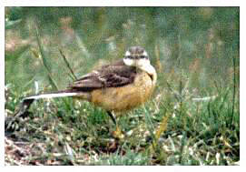

Yellow wagtail

27/08/59 - 7 birds. (DEP)
13/09/59 - 6 birds. (DEP)
20/08/64 - Single bird. (DEP)
02/09/65 - 2 birds. (DEP)
25/08/66 - 8 birds. (DEP)
08/09/66 - 8+ birds. Record count to date. (DEP)
24/08/67 - Single bird. (DEP)
07/05/70 - Single bird. (DEP)
27/08/70 - 2 birds. (DEP)
29/04/78 - 7 birds. (HCS)
22/04/90 - Single bird, seen on 'Jim's field'. (DWH)
28/09/99 - Single bird. (LM)
27/08/21 - Record count of c.10 to roost with Pied Wagtails with 6 the next day and 2 on 02/09